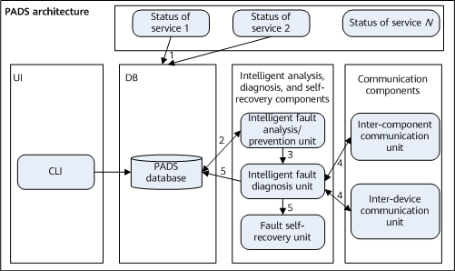

PADS simulates experts to monitor the service status in real time. It also proactively detects faults, and automatically diagnoses and rectifies them.
Self-diagnosis and self-recovery in specific fault modes
Service health checks and self-recovery upon poor check results
